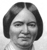

Alison Booth
Moore, Frank. Women of the War: Their Heroism and Self-Sacrifice. Hartford, CT: Scranton; Chicago: Treat; San Francisco: Bancroft; Cincinnati, OH: National, 1866; 1867; 1869.
TOC: Bridget Divers; Carrie Sheads; Women as Soldiers; Kady Brownell; Miss Major Pauline Cushman; Mrs. Belle Reynolds; Mrs. E.E. George; Mother Byckerdyke; Loyal Southern Women; Anna Etheridge; Mrs. Elida Rumsey Fowle; Mrs. Fanny Ricketts; Women's Sacrifices; Margaret Breckinridge; Mrs. Charlotte E. Mckay; Mrs. Harriet W.F. Hawley; Miss Rebecca R. Usher; Mrs. Ann Hitz; Miss Georgiana Wiles; “Aunt Lizzie” and “Mother”; Miss Mary E. Dupee; Nelly M. Chase; Miss Jane Boswell Moore; Sanitary Laborers; Mrs. A.H. Hoge; Mrs. Elizabeth Mendenhall; Mary E. Shelton; Mrs. Mary A. Brady; Mrs. John Harris; Mrs. Mary Morris Husband; Anna Maria Ross; Mrs. Isabella Fogg; What We Did at Gettysburg; Mrs. Mary W. Lee; Mrs. Stephen Barker; Miss Emily W. Dana; Mrs. S. Burger Stearns; Miss Maria M.C. Hall; Miss Amy M. Bradley; Miss Hagan and Other Nurses at Chattanooga.
-
Kady Brownell
-
Mrs. Belle Reynolds
-
Mrs. Mary Morris
-
 Mrs. A. H. Hoge
Mrs. A. H. Hoge -
 Mother Byckerdyke
Mother Byckerdyke -
Miss Georgiana Willets
Search OCLC WorldCat for this title.
Search Google Books for this title.